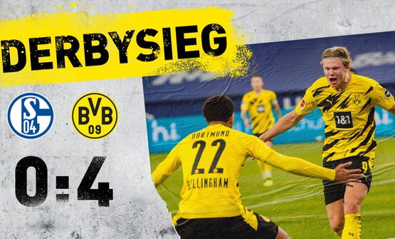
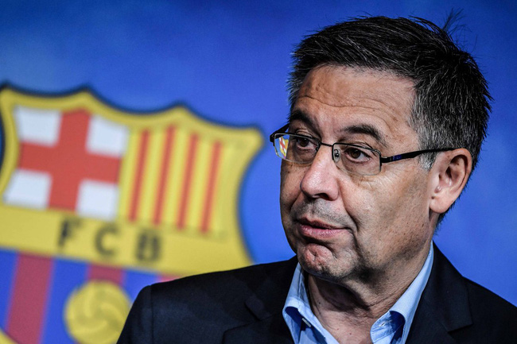
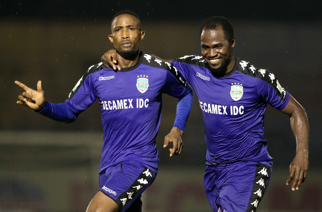
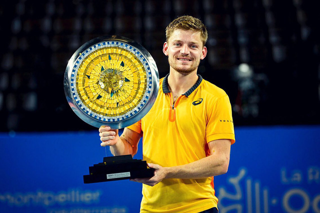
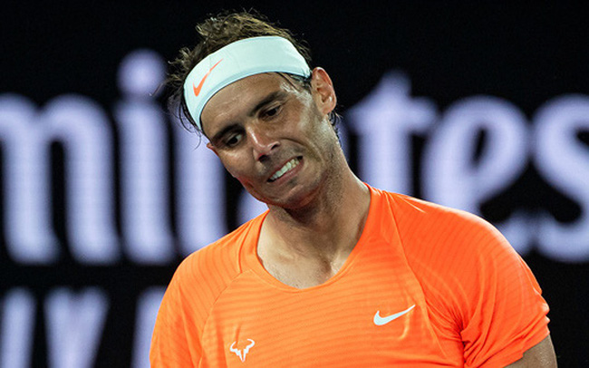
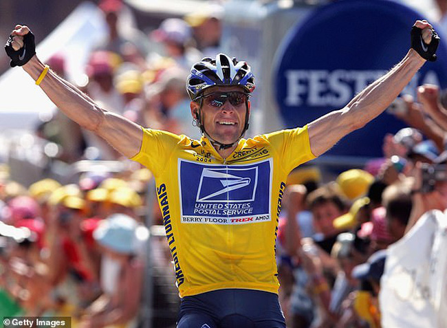

-

Schalke 0-4 Dortmund: Erling Haaland tiếp tục đặt dấu ấn
Erling Haaland tiếp tục tỏa sáng với 1 cú đúp, trong đó có 1 pha làm bàn tuyệt đẹp để giúp Dortmund giành thắng lợi trong trận derby vùng Ruhr.
-

Cựu chủ tịch của CLB Barcelona bị bắt giữ.
Thông tin nóng của bóng đá thế giới trong ngày hôm nay là việc cựu chủ tịch Josep Bartomeu của CLB Barcelona bị bắt giữ.
-

Đinh Hoàng Max gia nhập Topenland Bình Định
HLV Nguyễn Đức Thắng của Topenland Bình Định cho biết sẽ đăng ký bổ sung cầu thủ nhập tịch Đinh Hoàng Max thi đấu ở giai đoạn hai LS V.League 1-2021.
-

David Goffin vô địch giải quần vợt Open Sud de France 2021
David Goffin đã chấm dứt cơn khát danh hiệu kéo dài 3 năm bằng chức vô địch tại giải quần vợt Open Sud de France.
-

Rafael Nadal rút lui khỏi giải quần vợt Rotterdam mở rộng
Rafael Nadal vừa tuyên bố sẽ rút lui khỏi giải quần vợt Rotterdam mở rộng - bắt đầu diễn ra từ đầu tuần sau. Tuy nhiên, chấn thương lưng đã khiến tay vợt người Tây Ban Nha không thể làm điều đó.
-

Lance Armstrong đã có thể vô địch Tour de France một cách trong sạch
Bình luận viên huyền thoại Phil Liggett vừa đưa ra 1 ý kiến đầy tranh cãi liên quan tới tay đua mang tới scandal tồi tệ nhất lịch sử Tour de France.